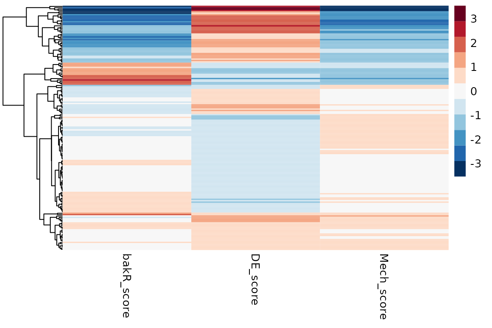

Going beyond the defaults with bakR
Isaac Vock
Source:vignettes/Further-Analyses.Rmd
Further-Analyses.RmdIntroduction
Welcome! This vignette discusses an exciting hodge-podge of additional analyses that can be done with bakR. The assumption is that at this point you have worked through the Getting-Started vignette. If that is not the case, I would highly suggest starting there and then coming back here once you’re familiar with the standard use cases of bakR. The topics to be addressed are as follows:
- Performing differential synthesis analysis with bakR (and DESeq2, as you will see)
- Assessing the mechanisms of differential expression in non-steady state systems
- TBD (Keep your eyes for announcements about updates to this vignette with more to come!)
These are the packages you are going to have to install and load in order to do everything presented in this vignette:
library(bakR)
# Packages that are NOT automatically installed when bakR is installed
library(DESeq2)
#> Loading required package: S4Vectors
#> Loading required package: stats4
#> Loading required package: BiocGenerics
#>
#> Attaching package: 'BiocGenerics'
#> The following object is masked from 'package:bakR':
#>
#> plotMA
#> The following objects are masked from 'package:stats':
#>
#> IQR, mad, sd, var, xtabs
#> The following objects are masked from 'package:base':
#>
#> anyDuplicated, aperm, append, as.data.frame, basename, cbind,
#> colnames, dirname, do.call, duplicated, eval, evalq, Filter, Find,
#> get, grep, grepl, intersect, is.unsorted, lapply, Map, mapply,
#> match, mget, order, paste, pmax, pmax.int, pmin, pmin.int,
#> Position, rank, rbind, Reduce, rownames, sapply, setdiff, sort,
#> table, tapply, union, unique, unsplit, which.max, which.min
#>
#> Attaching package: 'S4Vectors'
#> The following objects are masked from 'package:base':
#>
#> expand.grid, I, unname
#> Loading required package: IRanges
#> Loading required package: GenomicRanges
#> Loading required package: GenomeInfoDb
#> Loading required package: SummarizedExperiment
#> Loading required package: MatrixGenerics
#> Loading required package: matrixStats
#>
#> Attaching package: 'MatrixGenerics'
#> The following objects are masked from 'package:matrixStats':
#>
#> colAlls, colAnyNAs, colAnys, colAvgsPerRowSet, colCollapse,
#> colCounts, colCummaxs, colCummins, colCumprods, colCumsums,
#> colDiffs, colIQRDiffs, colIQRs, colLogSumExps, colMadDiffs,
#> colMads, colMaxs, colMeans2, colMedians, colMins, colOrderStats,
#> colProds, colQuantiles, colRanges, colRanks, colSdDiffs, colSds,
#> colSums2, colTabulates, colVarDiffs, colVars, colWeightedMads,
#> colWeightedMeans, colWeightedMedians, colWeightedSds,
#> colWeightedVars, rowAlls, rowAnyNAs, rowAnys, rowAvgsPerColSet,
#> rowCollapse, rowCounts, rowCummaxs, rowCummins, rowCumprods,
#> rowCumsums, rowDiffs, rowIQRDiffs, rowIQRs, rowLogSumExps,
#> rowMadDiffs, rowMads, rowMaxs, rowMeans2, rowMedians, rowMins,
#> rowOrderStats, rowProds, rowQuantiles, rowRanges, rowRanks,
#> rowSdDiffs, rowSds, rowSums2, rowTabulates, rowVarDiffs, rowVars,
#> rowWeightedMads, rowWeightedMeans, rowWeightedMedians,
#> rowWeightedSds, rowWeightedVars
#> Loading required package: Biobase
#> Welcome to Bioconductor
#>
#> Vignettes contain introductory material; view with
#> 'browseVignettes()'. To cite Bioconductor, see
#> 'citation("Biobase")', and for packages 'citation("pkgname")'.
#>
#> Attaching package: 'Biobase'
#> The following object is masked from 'package:MatrixGenerics':
#>
#> rowMedians
#> The following objects are masked from 'package:matrixStats':
#>
#> anyMissing, rowMedians
library(pheatmap)
# Packages which are installed when bakR is installed
library(dplyr)
#>
#> Attaching package: 'dplyr'
#> The following object is masked from 'package:Biobase':
#>
#> combine
#> The following object is masked from 'package:matrixStats':
#>
#> count
#> The following objects are masked from 'package:GenomicRanges':
#>
#> intersect, setdiff, union
#> The following object is masked from 'package:GenomeInfoDb':
#>
#> intersect
#> The following objects are masked from 'package:IRanges':
#>
#> collapse, desc, intersect, setdiff, slice, union
#> The following objects are masked from 'package:S4Vectors':
#>
#> first, intersect, rename, setdiff, setequal, union
#> The following objects are masked from 'package:BiocGenerics':
#>
#> combine, intersect, setdiff, union
#> The following objects are masked from 'package:stats':
#>
#> filter, lag
#> The following objects are masked from 'package:base':
#>
#> intersect, setdiff, setequal, union
library(magrittr)
#>
#> Attaching package: 'magrittr'
#> The following object is masked from 'package:GenomicRanges':
#>
#> subtract
library(ggplot2)
library(stats)
# Set the seed for reproducibility
set.seed(123)Differential synthesis analysis with bakR + DESeq2
I claim that bakR is a tool for performing differential kinetic analysis, but if you are coming from the Getting-Started vignette then you might think that this is a misnomer. All that I showed you how to do in that vignette was differential stability analysis. Full-fledged differential kinetic analysis means performing differential synthesis analysis as well, so let’s talk about how you can do that with bakR.
As the title of this section suggests though, bakR won’t be able to accomplish this task alone. The reason for this is that assessing changes in synthesis means assessing changes in RNA stability and RNA expression. Therefore, we need to perform differential expression analysis in conjunction with differential stability analysis. In theory, I could have implemented my own differential expression analysis in bakR, but with so many popular software tools currently in existence to perform that task, it seemed pointlessly redundant. It also gives you the freedom to use whatever differential expression analysis tool that you are used to using, and to perform whatever kind of DE analysis that you like independent of bakR.
To show you how to perform differential synthesis analysis, I will be using DESeq2 for the purpose of differential expression analysis. Why? Because I like DESeq2. It’s a good model, it’s a good piece of software, and it was an early source of inspiration for me in my PhD. Also, you’ll see that some of the output of bakR is specifically designed with DESeq2 in mind, so it will facilitate the process of performing differential expression analysis a bit.
First things first, let’s simulate some data! We’ll simulate 1000 genes, with 200 observing differential synthesis and no changes in stability. Let’s also run the efficient implementation while we are at it.
# Simulate a nucleotide recoding dataset
sim_data <- Simulate_bakRData(1000,
num_kd_DE = c(0, 0),
num_ks_DE = c(0, 200))
# This will simulate 500 features, 2 experimental conditions
# and 3 replicates for each experimental condition
# See ?Simulate_bakRData for details regarding tunable parameters
# Extract simulated bakRData object
bakRData <- sim_data$bakRData
# Extract simualted ground truths
sim_truth <- sim_data$sim_list
## Run the efficient model
# We'll tell it what the mutation rates are just for efficiency's sake
Fit <- bakRFit(bakRData, pnew = rep(0.05, times = 6), pold = 0.001)
#> Finding reliable Features
#> Filtering out unwanted or unreliable features
#> Processing data...
#> Estimating fraction labeled
#> Estimating per replicate uncertainties
#> Estimating read count-variance relationship
#> Averaging replicate data and regularizing estimates
#> Assessing statistical significance
#> All done! Run QC_checks() on your bakRFit object to assess the quality of your data and get recommendations for next steps.The second step is to perform differential expression analysis. As I alluded to above, bakR makes this a bit easier, and the way it does that is by providing a count matrix formatted just how DESeq2 likes it! DESeq2 also requires one more input, and that is a dataframe that provides information about any covariates (things that distinguish samples). Here is all the code to produce those necessary inputs
# Get the count matrix from bakR
Counts <- Fit$Data_lists$Count_Matrix
# Experimental conditions for each sample
# There are 6 s4U treated samples (3 replicates of each condition)
# In addition, there are 2 -s4U control samples (1 for each condition)
## s4U conditions
# 1st three samples are reference (ref) samples
# Next three samples are experimental (exp) samples
conditions_s4U <- as.factor(rep(c("ref", "exp"), each = 3))
## -s4U control conditions
# 1st sample is reference, next is experimental
conditions_ctl <- as.factor(c("ref", "exp"))
# Combined s4U and -s4U control conditions
conditions <- c(conditions_s4U, conditions_ctl)
# Make the colData input for DESeq2
colData <- data.frame(conditions = conditions)
rownames(colData) <- colnames(Counts)
# Take a look at the colData object
print(t(colData))| 1 | 2 | 3 | 4 | 5 | 6 | 7 | 8 | |
|---|---|---|---|---|---|---|---|---|
| conditions | ref | ref | ref | exp | exp | exp | ref | exp |
Once you make sure that you have correctly mapped samples to experimental conditions in the colData object, you can create that sweet sweet DESeqDataObject
dds <- DESeqDataSetFromMatrix(countData = Counts,
colData = colData,
design = ~conditions)
#> converting counts to integer modeI invite you to read the DESeq2 documentation if you need help understanding the call to DESeqDataSetFromMatrix. In short though, the first entry is our count matrix, the second is our colData object, and the final entry is the design matrix. Limma’s documentation (another differential expression analysis software) has a great introduction to design matrices, but this one is simple. It means that we want to group samples together that have the same value for the conditions factor in the colData object. So all “ref” samples will be grouped together and all “exp” samples will be grouped together. DESeq2 will then compare different groups, which means that it will compare “exp” and “ref” samples in this case.
Now we can fit DESeq2 and extract the differential expression analysis results:
ddso <- DESeq(dds)
#> estimating size factors
#> estimating dispersions
#> gene-wise dispersion estimates
#> mean-dispersion relationship
#> final dispersion estimates
#> fitting model and testing
# Extract results of experimental vs. reference comparison
reso <- results(ddso, contrast = c("conditions", "exp", "ref"))
# Look at the column names of the reso object
colnames(as.data.frame(reso))
#> [1] "baseMean" "log2FoldChange" "lfcSE" "stat"
#> [5] "pvalue" "padj"For our sake, we are going to use two columns in the reso object: log2FoldChange and lfcSE. Both of these column names are pretty self-explanatory, but for completeness sake, log2FoldChange is the log base-2 fold change in RNA expression, and lfcSE is the standard error in the log2FoldChange.
With that, we have all we need to perform differential synthesis analysis! But how you may ask? Well, if our population of cells that we performed RNA-seq on was at steady-state (i.e., the cells were not actively responding to some perturbation while treating with with a metabolic label), then the following relationship holds between \(ksyn\) (RNA synthesis rate) \(kdeg\) (RNA degradation rate) and \([RNA]\) (RNA concentration):
\[ [RNA] = \frac{ksyn}{kdeg} \]
Therefore, the log2 fold change in \([RNA]\) (\(L2FC(RNA)\)) is: \[ \begin{align} L2FC(RNA) &= log_2(\frac{[RNA_{exp}]}{[RNA_{ref}]}) \\ &= log_2(\frac{ksyn_{exp}*kdeg_{ref}}{ksyn_{ref}*kdeg_{exp}}) \\ &= log_2(\frac{ksyn_{exp}}{ksyn_{ref}}) - log_2(\frac{kdeg_{exp}}{kdeg_{ref}}) \\ &= L2FC(ksyn) - L2FC(kdeg) \end{align} \] Therefore, the key conclusion for performing differential synthesis analysis is that:
\[ L2FC(ksyn) = L2FC(RNA) + L2FC(kdeg) \]
bakR provides \(L2FC(kdeg)\) and DESeq2 provides \(L2FC(RNA)\), so we have everything we need to calculate the \(L2FC(ksyn)\). Let’s make a data.frame with this information:
ksyn_df <- data.frame(L2FC = reso$log2FoldChange + Fit$Fast_Fit$Effects_df$L2FC_kdeg,
Gene = Fit$Fast_Fit$Effects_df$XF)
We are missing one key component though: the uncertainty (or standard error). How can we get that from bakR and DESeq2? Well the easiest and most conservative thing to do is to assume independence of \(L2FC(RNA)\) and \(L2FC(kdeg)\). That’s because the variances of independent random variables add, so that:
\[ \begin{align} \text{Var}[L2FC(ksyn)] &= \text{Var}[L2FC(kdeg) + L2FC(RNA)] \\ &= \text{Var}[L2FC(kdeg)] + \text{Var}[L2FC(RNA)] \end{align} \]
where \(\text{Var}[X]\) is the variance of random variable \(X\). We can then calculate the standard error as the square root of the variance, meaning:
\[ \text{se}[L2FC(ksyn)] = \sqrt{se[L2FC(kdeg)]^2 + se[L2FC(RNA)]^2} \] where I am using the non-standard notation \(\text{se}[X]\) to mean the standard error of \(X\). With this, we can fill out the final component of the L2FC(ksyn) dataframe:
The se in Effects_df is for the log base-e fold change in \(kdeg\), so we have to use the fact that:
\[ \text{Var}[a*X] = a^2*\text{Var}[X] \] for some constant a. In this case, a is \(log_2(e)\) because that is the multiplicative factor necessary to convert from log base-2 to log base-e. Now all that is left is to calculate the p-value and multiple-test adjust it (I am going to use Benjamini-Hochberg for multiple test adjustment because that is what both bakR and DESeq2 use).
# Calculate p-value using asymptotic Wald test
ksyn_df <- ksyn_df %>%
mutate(pval = 2*pnorm(-abs(L2FC/se)),
padj = p.adjust(pval, method = "BH"))
You can now make a \(L2FC(ksyn)\) volcano plot to visualize the final conclusions!
# Add conclusion at 0.01 FDR control
ksyn_df <- ksyn_df %>%
mutate(conclusion = as.factor(ifelse(padj < 0.01,
ifelse(L2FC < 0, "Decreased txn", "Increased txn"),
"Not sig.")))
# Make volcano plot
ksyn_volc <- ggplot(ksyn_df, aes(x = L2FC, y = -log10(padj), color = conclusion)) +
theme_classic() +
geom_point(size = 1) +
xlab("L2FC(ksyn)") +
ylab("-log10(padj)") +
scale_color_manual(values = c("blue", "orange", "gray"))
# Observe volcano plot
ksyn_volcThe simulation is such that features number 1-800 will be the non-differentially synthesized RNA and features 801-1000 will be the 200 differentially synthesized RNA. Therefore, we can also see how the analysis performed
# Add conclusion at 0.01 FDR control
ksyn_df <- ksyn_df %>%
mutate(result = as.factor(ifelse(padj < 0.01,
ifelse(as.integer(Gene) <= 800, "FP", "TP"),
ifelse(as.integer(Gene) <= 800, "TN", "FN"))))
# Make volcano plot
ksyn_results <- ggplot(ksyn_df, aes(x = L2FC, y = -log10(padj), color = result)) +
theme_classic() +
geom_point(size = 1) +
xlab("L2FC(ksyn)") +
ylab("-log10(padj)") +
scale_color_manual(values = c("black", "gray", "forestgreen", "blue"))
# Observe volcano plot
ksyn_resultsFP is a false positive, FN is a false negative, TP is a true positive, and TN is a true negative. All in all, I’d say it went pretty well! You now know how to perform differential synthesis analysis with bakR + DEseq2.
Going beyond the steady-state assumption
You may have noticed an assumption that continually crops up in the analyses presented in bakR vignettes: steady-state. In the Getting-Started vignette, it was a necessary part of relating the fraction new to the more interesting \(kdeg\). In this vignette, it was additionally a key part of assessing synthesis kinetics. It therefore underlies all of the differential kinetic analysis discussed so far. What happens if it is a bad assumption? “Dogs and cats living together! Mass hysteria!”? No Dr. Venkman, there’s a way out, and that’s what we’re going to talk about next.
Violating the steady-state assumption
Before we talk about what to do when the steady-state assumption is questionable, it’s worth briefly mentioning when the steady-state assumption is worth throwing out. Assuming steady-state RNA dynamics means that you are assuming the rate at which RNA synthesized is the same as the rate at which it is degraded. “Wait, does that mean we are assuming \(ksyn = kdeg\)?” No. The degradation rate constant \(kdeg\) is not the rate of degradation. The rate of degradation (i.e., the number of RNA molecules degraded per unit time) depends on \(kdeg\) AND the amount of RNA present. So steady-state actually means that \(ksyn = kdeg*[RNA]\). In the context of NR-seq experiments, assuming steady-state means that we are assuming this relationship holds throughout the entire metabolic label feed time. Therefore, another way to phrase this assumption is to say that we are assuming that our population of cells aren’t actively responding to some stimulus and regulating \(ksyn\) and/or \(kdeg\). RNA levels remain constant during the experiment.
Here’s a fun question: are cells ever at steady-state? Yes and no. An individual cell is NEVER at steady-state. Gene expression is constantly regulated as the cell progresses through the cell cycle and performs all of the biochemical functions necessary to stay alive. BUT, bakR is designed to analyze bulk nucleotide recoding RNA-seq data. This means the data comes from a population of cells, not a single cell. Thus, when I say that I am assuming steady-state, what I really mean is that I am assuming the population average is at steady-state. If the population of cells are asynchronous (so they aren’t all going through the exact same cell cycle stages at the same time) and haven’t been perturbed recently (e.g., treated with a drug), then this is probably a pretty solid assumption.
Lots of cool experiments are done with cells far from steady-state though. When using nucleotide recoding RNA-seq, it is increasingly popular to perform rapid degradation of a protein of interest, treatment with a specific drug, or some other acute perturbation leading up to and during metabolic labeling. Therefore, we need a way to analyze data without the helpful steady-state assumption. This is challenging though, because if we can’t assume steady-state, how do we relate what we measure (the fraction new) to the RNA metabolic kinetics we care about? The answer: keep it non-parametric.
Analyzing NR-seq data far from steady-state
I am using the term non-parametric here to suggest getting away from using explicit mathematical functions to model RNA metabolism. Rather, we can think very generally about what effects changes in RNA synthesis and degradation kinetics can have on the fraction new in an NR-seq experiment. Let’s say we compare an unperturbed, steady-state population of cells to a cells that have been treated with a drug of interest. If the fraction new for a particular transcript is higher in the drug treated cells than the untreated cells, how could that have come about? Well, generally speaking, there are two possibilities:
- The RNA may have been destabilized by the drug treatment. This is the same explanation you would give for the change if everything were steady-state.
- The synthesis rate of the RNA may have been ramped up following drug treatment. This is an intuitive explanation that is surprisingly only possible away from steady-state. At steady-state, changes in synthesis kinetics affect the amount of new and old RNA equally, leading to no change in the fraction new.
Here is the key realization: these two possibilities have different impacts on the LEVELS of RNA. If synthesis is increasing upon drug treatment, then the amount of that transcript will also increase. If the transcript is destabilized though, then there will be less of it around at the end of the experiment. Therefore, combining differential expression with differential fraction new analyses reveals the kinetic differences. More generally, here is a diagram that covers the range of possible kinetic mechanisms and conclusions:

Diagram of NR-seq NSS analysis strategy.
Performing steady-state independent comparisons with bakR + DESeq2
The goal of the steady-state independent analysis that I am putting forth is to identify the major kinetic mechanism of any differential expression observed. The analysis strategy is as follows:
- Compare NR-seq with bakR (but with one small parameter tweak)
- Perform differential expression analysis
- Use the NSSHeat() function in bakR to combine the results and come to a mechanistic conclusion.
Simple enough! As usual, let’s start out by simulating some data. Unfortunately, since non-steady state (NSS) is such a broad term, there is no NSS simulation option. That’s okay though, as the analysis strategy will still work even if the steady-state assumption isn’t invalid. To make it interesting though, we’ll simulate a mix of synthesis and degradation changes:
# Simulate a nucleotide recoding dataset
sim_data <- Simulate_bakRData(1000,
num_kd_DE = c(0, 200),
num_ks_DE = c(0, 200))
# This will simulate 1000 features, 2 experimental conditions
# and 3 replicates for each experimental condition.
# See ?Simulate_bakRData for details regarding tunable parameters
# Extract simulated bakRData object
bakRData <- sim_data$bakRData
# Extract simualted ground truths
sim_truth <- sim_data$sim_list
## Run the efficient model
Fit <- bakRFit(bakRData, NSS = TRUE)
#> Finding reliable Features
#> Filtering out unwanted or unreliable features
#> Processing data...
#> Estimating labeled mutation rate
#> Estimated pnews for each sample are:
#> # A tibble: 6 × 3
#> # Groups: mut [2]
#> mut reps pnew
#> <int> <dbl> <dbl>
#> 1 1 1 0.0500
#> 2 1 2 0.0501
#> 3 1 3 0.0500
#> 4 2 1 0.0500
#> 5 2 2 0.0501
#> 6 2 3 0.0498
#> Estimating unlabeled mutation rate
#> Estimated pold is: 0.001
#> Estimating fraction labeled
#> Estimating per replicate uncertainties
#> Estimating read count-variance relationship
#> Averaging replicate data and regularizing estimates
#> Assessing statistical significance
#> All done! Run QC_checks() on your bakRFit object to assess the quality of your data and get recommendations for next steps.What’s interesting about this simulation is that all transcripts which are differentially stable are also differentially synthesized, so our goal is to identify the major source of kinetic regulation. Also, note the change to the bakRFit() call; a parameter called NSS is set to TRUE. This will make it so that bakR compares logit(fraction new)s rather than log(kdeg)s, since the relationship between fraction new and \(kdeg\) may no longer hold.
Next, we can perform differential expression analysis just as we did before:
# Get the count matrix from bakR
Counts <- Fit$Data_lists$Count_Matrix
# Experimental conditions for each sample
# There are 6 s4U treated samples (3 replicates of each condition)
# In addition, there are 2 -s4U control samples (1 for each condition)
## s4U conditions
# 1st three samples are reference (ref) samples
# Next three samples are experimental (exp) samples
conditions_s4U <- as.factor(rep(c("ref", "exp"), each = 3))
## -s4U control conditions
# 1st sample is reference, next is experimental
conditions_ctl <- as.factor(c("ref", "exp"))
# Combined s4U and -s4U control conditions
conditions <- c(conditions_s4U, conditions_ctl)
# Make the colData input for DESeq2
colData <- data.frame(conditions = conditions)
rownames(colData) <- colnames(Counts)
# Make DESeq2 data object
dds <- DESeqDataSetFromMatrix(countData = Counts,
colData = colData,
design = ~conditions)
#> converting counts to integer mode
# Fit DESeq2 model
ddso <- DESeq(dds)
#> estimating size factors
#> estimating dispersions
#> gene-wise dispersion estimates
#> mean-dispersion relationship
#> final dispersion estimates
#> fitting model and testing
# Extract results of experimental vs. reference comparison
reso <- results(ddso, contrast = c("conditions", "exp", "ref"))We’re almost ready to use bakR’s special NSSHeat() function. NSSHeat() has two required inputs:
- A bakR fit object (preferably fit with NSS set to TRUE)
- A data frame containing differential expression analysis results
In particular, the differential expression data frame must contain four columns named as follows:
- XF: Name of the feature (gene, exon, etc.) that the read comes from.
- log2FoldChange: L2FC(RNA) estimated by the differential expression analysis.
- stat: L2FC(RNA)/se[L2FC(RNA)]; so like a differential expression z-score.
- padj: Multiple test adjusted p-value from differential expression analysis.
Conveniently, our DESeq2 results object has all the information we need! We can make the differential expression data frame like so:
# Convert to data frame
reso <- as.data.frame(reso)
# Make data frame
DE_df <- data.frame(XF = row.names(reso),
log2FoldChange = reso$log2FoldChange,
stat = reso$stat,
padj = reso$padj)We are ready to perform the steady-state independent analysis now!
NSSheatmap <- NSSHeat(Fit, DE_df)See ?NSSHeat for information about the additional parameters that can be specified. Most importantly, there is the bakRModel parameter, which tells NSSHeat which fit to use in the bakRFit model, if multiple exist. The default setting is to just use the MLE fit, which should always be there.
So what can you do with the output of NSSHeat? Well, as the name implies, this function is specifically designed to help you make heatmaps. NSSheatmap will have three columns:
- bakR_score: The logit(fraction new) change z-score from bakR
- DE_score: The L2FC(RNA) z-score from DESeq2
- Mech_score: A mechanism z-score that quantifies the extent to which significant changes in gene expression are synthesis or degradation driven. Synthesis driven = positive numbers; degradation driven = negative numbers.
You can quickly make the heatmap using the lovely pheatmap package:
# Nice red to blue color gradient
# Feel free to use any coloring your heart desires
col <- c("#053061", "#2166AC", "#4393C3", "#92C5DE",
"#D1E5F0", "#F7F7F7", "#FDDBC7", "#F4A582",
"#D6604D", "#B2182B", "#67001F")
# NSS heatmap
pheatmap(NSSheatmap, cluster_cols = FALSE, show_rownames = FALSE, color = col)
Each row in the data frame output by NSSHeat corresponds to a feature that was differentially expressed in the experimental condition. Features that were not identified as differentially expressed can either be the result of an underpowered analysis (i.e., they really are differentially expressed in the two conditions but more replicates/sequencing depth would have been required to identify this confidently) or of complicated concomitant modulation of synthesis and degradation kinetics. This makes non-differentially expressed features more difficult to analyze with this strategy, which is why bakR focuses on the differentially expressed features.